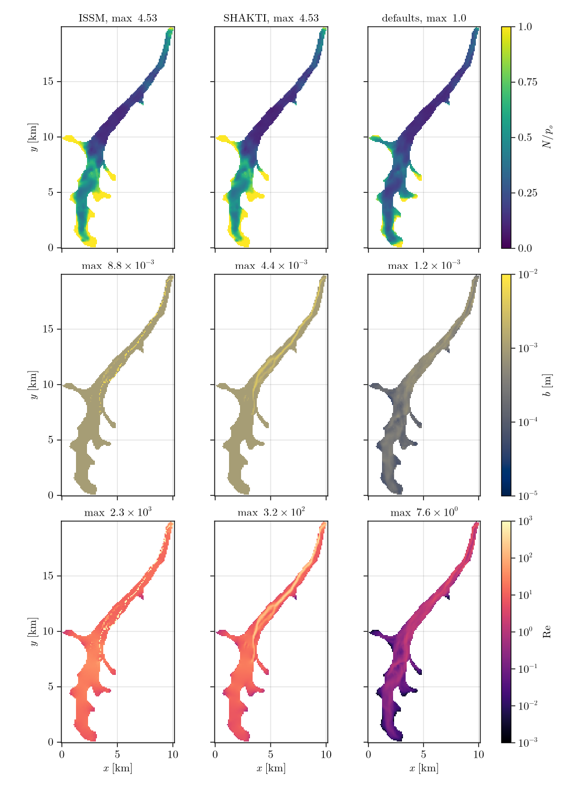

Drang Drung Glacier
The winter hydrology of Drang Drung Glacier, a valley glacier in the western Himalaya, from the ISSM SHAKTI run of (Thota et al., 2026), rasterized onto a 100 m grid. One year of 1-hour steps, the length of the ISSM run, with the defaults and with the original SHAKTI equations, against ISSM's own solution. The loaders are load_drangdrung and load_drangdrung_issm in docs/make_figures.jl, which also makes the figure; the data is in test/drangdrung/data_v2.
- Geometry,
A,Gand the friction coefficient from the ISSM model; no sliding, no surface input. The water comes from geothermal melt. - Sliding law:
LinearSlidingLawwith the uniformC = 500of the ISSM run. - ISSM's constants:
rho_i = 917,omega = 1e-3,br = 0,lr = 1,ct = 0.
using Shakti
d = load_drangdrung() # (; xc, yc, DX, mask, H, zb, A, G, ub_x, ub_y, C)
Nx, Ny = size(d.H)
grid = Grid(Nx, Ny, (Nx - 1) * d.DX, (Ny - 1) * d.DX)
sl = LinearSlidingLaw(grid, d.C)
b = fill(1e-3, Nx, Ny)
p = ModelParameters(rho_i = 917.0, omega = 1e-3, br = 0.0, lr = 1.0, ct = 0.0)
state = State(grid)
set_initial_conditions!(state, grid, p, sl, d.mask, d.A, d.zb, d.zb .+ d.H .+ b, b, d.G, d.ub_x, d.ub_y,
zeros(Nx, Ny), zeros(Nx + 1, Ny), zeros(Nx, Ny + 1))
ps = PicardSolver(500, 1e-6, CUDSSDirectSolver(grid; structure = :general), grid) # LUDirectSolver(grid) on CPU
sim = Simulation(grid, state, 8760, floattype(3600.0), p, ConstantMeltInput(), sl; ps = ps,
observer = IOObserver(["N", "b", "Re", "po"], [0, 8760], NetCDFFileWriter(), "drangdrung.nc"))
run!(sim)The ISSM reproduction adds b_min = 1e-3, b_max = 1.0 to the parameters (ISSM's gap limits) and cavity_filling = FilledCavities(), uplift = NoUplift(), hydraulic_potential = BedPotential(), gap_coupling = ExplicitGapCoupling() to Simulation.
| Run | N/p_o | Mean N | Max b | Max Re | Correlation of N with ISSM |
|---|---|---|---|---|---|
| ISSM, day 366 | 8.8 mm | 2 300 | |||
| ISSM reproduction | 0.09 to 4.5 | 1.00 MPa | 4.5 mm | 320 | 0.994 |
| defaults | 0.10 to 1 | 0.63 MPa | 1.2 mm | 8 | 0.78 |
The defaults use the default b_min = 1e-6. Grid 102 x 200 with 2 695 grounded cells. Wall times are on the Performance page.

Columns: ISSM, the ISSM reproduction (SHAKTI equations) and the defaults.
- The ISSM reproduction matches ISSM's effective pressure, including the cells where
p_w < 0(N/p_o > 1) along the margins. - The match needs water the melt does not supply. With the gap held at
b_min = 1mm and full of water, the explicit coupling adds water wherever creep would close the gap belowb_min: the outflow at the terminus is about 14 times the geothermal melt, and the extra water carves the channel along the trunk. ISSM's own run also drains more than it melts, about 2.4 times. - The defaults close the water budget: after about two weeks the outflow equals the melt,
0.004 m³/s. With that little water the gap stays below 1.2 mm everywhere, no channel forms and the flow is laminar.
The ISSM setup with the default ConsistentGapCoupling in place of ExplicitGapCoupling closes the water budget (the water created per step is about 1e-12 of the input) and gives mean N 0.65 MPa, a laminar sheet and a correlation of 0.80 with ISSM. b_min makes no difference here: 1e-3 and 1e-6 give the same run, because the conductance is built from the water and not from the clamped gap. To reproduce ISSM itself, use ExplicitGapCoupling.
On the default (unfilled) sheet b_min is a minimum cavity size, not a numerical floor. With ISSM's b_min = 1e-3 the melt cannot fill a 1 mm gap: after two years every grounded cell is at b_min, 74 % are at p_w = 0 and 88 % have N > 0.9 p_o, mean N is 2.38 MPa and the correlation with ISSM is -0.70. A run restarted at b_min = 1e-3 from the wet end state of the 1e-6 run drains to the same state, so b_min alone picks the branch. At 1e-6 the two-year run gives mean N 0.63 MPa and a correlation of 0.78, with the water budget closed to 1e-16 of the input.